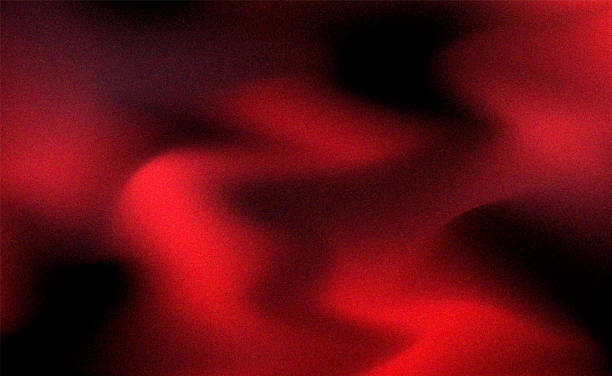

Project
Naam van het project
Voorlopige tekst: beschrijving van het project, wat ik gemaakt heb en waarom.
Wat ik maakte
- Voorlopige tekst: onderdeel 1
- Voorlopige tekst: onderdeel 2
- Voorlopige tekst: onderdeel 3
Screenshots



Project
Voorlopige tekst: beschrijving van het project, wat ik gemaakt heb en waarom.